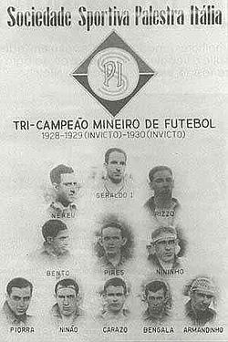
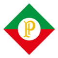
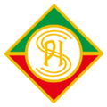
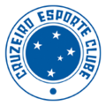
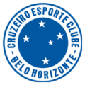
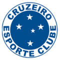
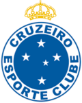
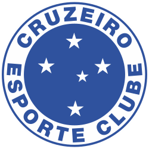

História do Clube
O Cruzeiro foi fundado no dia 2 de janeiro de 1921, por desportistas da colônia italiana de Belo Horizonte, com o nome de Società Sportiva Palestra Itália. As cores adotadas, como não poderia deixar de ser, foram as mesmas da bandeira italiana: verde, vermelho e branco. Na verdade a escolha do uniforme foi feita de acordo com as refinadas ideias do designer Arthur Lemmes, na própria capital mineira. Em 1922, o clube compra um terreno pertencente à prefeitura, onde hoje fica o Parque Esportivo do Cruzeiro. Em 23 de setembro de 1923, inaugura seu estádio, no Barro Preto, construído por jogadores e associados a maioria da colônia italiana de Belo Horizonte, composta em grande parte por operários de construção civil. Além de se caracterizar como uma equipe de descendentes de italianos, o Palestra também destacava-se por possuir elementos da classe trabalhadora da cidade. No corpo social do Palestra, prevaleciam homens da profissão de pedreiros, policiais, pintores, comerciários, marceneiros, médicos, escritores, políticos, industriários e empresários que eram os filhos dos imigrantes que vieram construir a capital do estado de Minas Gerais, Belo Horizonte, em 1894, e que herdaram de seus pais as mesmas profissões. O primeiro uniforme do clube foi composto por camisa verde, calção branco e meias vermelhas. O clube foi restrito apenas a participação de elementos da colônia e, consequentemente, brancos, até o ano de 1925, quando é retirada do estatuto do clube uma cláusula que impedia a inscrição de atletas e associados que não fossem de origem italiana. Isso abre as portas para colaboradores de qualquer origem. A primeira conquista significativa oficial e reconhecida do Palestra é o tricampeonato mineiro entre 1928 e 1930, sendo os dois últimos de forma invicta. O crescimento do time na cidade força as outras grandes equipes da época a se organizarem e em 1933 criam a primeira liga profissional do estado, a Associação Mineira de Esportes.

Mudança de nome
Em 1936, alguns dirigentes e ex-atletas lideraram um movimento de nacionalização do Palestra que levou o nome de Ala Renovadora. A intenção do grupo era mudar o nome do clube que já havia deixado de ser uma associação exclusiva da colônia italiana e por isso não havia mais sentido em se usar o nome Itália. A ideia sofreu resistências mas acabou ganhando aliados, recebendo, em seu primeiro projeto, o nome de "Renovadora Football Club", e alterando as cores de verde e vermelho para verde e branco, substituindo o vermelho do sangue derramado por italianos para o branco da paz. O Renovadora Football Club chegou a realizar alguns treinos com esse nome, porém, uma ala preconceituosa, que era maior parte da elitizada diretoria, rejeitou a ideia. Em 30 de janeiro de 1942, em plena Segunda Guerra Mundial, o Presidente Getúlio Vargas, que já havia declarado guerra aos países do Eixo (Itália, Alemanha e Japão), através de um Decreto-Lei, determinou a proibição do uso de termos e denominações referentes as nações inimigas. A primeira partida após a publicação do Decreto-Lei era contra o Atlético-MG no dia 1 de fevereiro de 1942. O time entrou em campo com uma camisa azul e três listras brancas horizontais, sem escudo e sem nome. Somente em 4 de fevereiro de 1942, a diretoria adotou o nome provisório de Palestra Mineiro, em substituição à Societá Sportiva Palestra Itália, conforme determinação presidencial. As cores do novo clube foram escolhidas em homenagem à origem da instituição, o Yale. A necessidade de se transformar o clube numa entidade totalmente brasileira, e após a publicação de outro Decreto-Lei em 31 de agosto de 1942, foi concretizada em 2 de outubro de 1942, quando, numa reunião da diretoria, foi aprovada uma nova mudança no nome do clube para Ypiranga, em homenagem ao local onde teria sido proclamada a Independência do Brasil. No dia 7 de outubro de 1942, numa nova assembleia, que acabou com a renúncia do presidente Ennes Cyro Pony, entregar a direção do clube, por 15 dias, a uma junta governativa; doar todos os troféus e bronzes à campanha do metal e adotar um novo uniforme para a equipe de futebol. E foi aprovado o nome do clube que permanece até hoje: Cruzeiro Esporte Clube, uma homenagem ao símbolo maior da pátria, a constelação do Cruzeiro do Sul, e que foi sugerida pelo ex-presidente do clube Oswaldo Pinto Coelho, o time ainda utilizaria o nome Palestra, provisóriamente durante todo o final de 1942, pois a burocracia da Federação de Futebol só aprovou os novos estatutos no início de 1943.
Anos 1950 e 1960
Em seus primeiros anos de vida, o Cruzeiro conquistou o tricampeonato mineiro de 1943 a 1945 e reformou o seu estádio que passou a se chamar Estádio Juscelino Kubitschek, em homenagem ao então governador do estado. Com a inauguração do Mineirão em 1965, o futebol mineiro rompe sua característica provinciana com a inclusão de Minas Gerais nas competições nacionais. O primeiro clássico de comemoração entre Atlético-MG e Cruzeiro no estádio do Mineirão foi pela final do mineiro de 1965. Este foi o primeiro clássico disputado no Mineirão e o primeiro depois da pancadaria no Independência. O jogo foi tenso, deste o princípio, com muitas jogadas violentas. O Cruzeiro dominava a partida e vencia por 1 a 0, quando Décio Teixeira cometeu pênalti em Wilson Almeida, que entrava na área para marcar o 2º gol, aos 34 minutos do segundo tempo. O Atlético-MG protestou alegando que a falta havia sido cometida sobre a risca da grande área, se esquecendo que a linha faz parte da mesma. Alguns jogadores do Atlético-MG agrediram o árbitro e entraram em atrito com policiais. Foram 30 minutos de paralisação e o árbitro relatou na súmula a expulsão de 9 jogadores. O Atlético abandonou o estádio antes do encerramento da partida. Assim, após o término, Tostão, ironicamente, lamentou que o jogo não tivesse sido reiniciado, pois seria o início de uma grande goleada. O Cruzeiro ficou com o título mineiro daquele ano, abrindo a Era Mineirão. Após 22 partidas pelo Campeonato Mineiro de 1965 e 6 pela Taça Brasil de 1966, em 30 de novembro de 1966, o Cruzeiro começava a escrever contra o Santos uma das páginas mais importantes de sua história, seu primeiro título nacional.Século XXI
Em 14 de julho de 2008 foi sancionada a Lei nº 9.590/2008 pelo então prefeito de Belo Horizonte, Fernando Damata Pimentel, que instituiu "O Dia do Cruzeiro e o Dia do Cruzeirense", comemorado anualmente o dia internacional no dia 2 de janeiro. A lei foi resultado do Projeto de Lei nº 1.594/2008 de autoria do vereador Alberto Rodrigues. Depois de uma temporada caótica com irregularidades dentro e fora de campo, o Cruzeiro foi rebaixado pela primeira vez em sua história do Campeonato Brasileiro. Começou o ano ainda bem com o título do Campeonato Mineiro e uma boa campanha na fase do grupos da Copa Libertadores, mas não conseguiu manter o momento. Depois de um investigação da Polícia Civil sobre transações irregulares e uso de empresas de fachada para ocultar crimes cometidos dentro do clube no meio do ano, o time foi eliminado da Libertadores e da Copa do Brasil. No Brasileirão nunca saiu da segunda parte da classificação e lutou contra o rebaixamento até a última rodada. Foi enfim rebaixado depois de uma derrota com o placar de 2–0 contra o Palmeiras no dia 8 de dezembro de 2019, em jogo que teve que ser encerrado antes dos 45 minutos do segundo tempo por falta de segurança, devido a violência e revolta da torcida cruzeirense. Durante os dois primeiros anos da década, 2020 e 2021, o clube expressava em seus compromissos dentro de campo o mais inteligível estado que também era existente fora dele. As dívidas que iriam se acumulando cada vez mais só contribuíam para o crescimento da crise dentro da instituição, e com isso, a equipe passou a maior parte das duas temporadas da Segunda Divisão brigando contra o rebaixamento para a série C, o que ocasionou uma grande quantidade de demissões de treinadores, dirigentes e jogadores durante este período. Isto, acabou deixando a raposa por três anos consecutivos longe da elite do futebol nacional. Porém, em 18 de dezembro de 2021, ao término da temporada daquele ano, foi anunciada a compra da SAF do clube por Ronaldo Nazário, ex-jogador e ídolo da raposa. Com uma mudança drástica no planejamento do elenco e revitalizações em praticamente todas as funções dentro do clube para a temporada de 2022, o time liderado pelo Uruguaio Paulo Pezzolano conquistou o acesso a Série A de 2023 antecipadamente, após a vitória contra o Vasco da Gama pelo placar de 3–0. Na rodada seguinte, ao golear a Ponte Preta em Campinas por 4 a 1 e conseguir uma combinação de resultados ao seu favor naquela ocasião, o Cruzeiro já não podia mais ser alcançado por nenhum outro clube na classificação, tendo assim conquistado o título da Série B com oito rodadas de antecedência. O clube bateu o recorde como o time que conseguiu o acesso mais rápido à Série A desde 2006 com a implantação dos pontos corridos, na 31ª rodada, e também como o que conquistou o título da maneira mais antecipada, na 32ª rodada. Em 29 de abril de 2024, foi anunciada a aquisição de 90% da SAF pelo empresário Pedro Lourenço, proprietário da quinta maior rede de supermercados do Brasil, o Supermercados BH. Ao assumir a gestão do clube, Pedrinho deu início a uma enorme reformulação no organograma celeste, realizando trocas dentro e fora de campo, e nomes importantes do futebol brasileiro como o goleiro Cássio e o atacante Kaio Jorge chegaram para integrar o plantel ao meio da temporada, juntamente com outras peças importantes. Na direção, Alexandre Mattos e o ídolo do clube Edu Dracena passaram a ocupar cargos altamente relevantes, e pouco depois, Fernando Diniz assumiu o lugar de Fernando Seabra como treinador da equipe. Ao fim da temporada, a equipe terminou como vice-campeã da Copa Sul-americana e ocupando a nona colocação no Brasileirão, uma posição atrás da zona de classificação para a Libertadores de 2025, grupo este que a equipe frequentou durante todo o campeonato e o deixou escapar nas últimas rodadas.Mascote
O Raposão é o mascote oficial do Cruzeiro desde 2003 e representa a Raposa-Vermelha (Vulpes Vulpes). Ele é muito bom no futebol, um craque! Com uma personalidade animada e carismática, ele é conhecido por seu jeito esperto e marrento, cativando torcedores de todas as idades. A cada ano, seu número de camisa muda para representar a idade do clube. O Raposão tem uma relação próxima com os cruzeirenses, sendo o melhor amigo dos torcedores, receptivo e carinhoso com as crianças e romântico com as torcedoras.
O Raposinho, criado em 2008, é da espécie Raposa-Anã (Vulpes Macrotis) e é o melhor amigo do Raposão. Ele é travesso, brincalhão e carismático, mas é muito ruim de bola. Os números de sua camisa representam os títulos oficiais conquistados pelas equipes masculina (79) e feminina (3). O Raposinho tem uma relação divertida com os torcedores, sendo conhecido por pregar peças e ser amigo da criançada.
Hino Do Cruzeiro
Letra
Existe um grande clube na cidade
Que mora dentro do meu coração
Eu vivo cheio de vaidade
Pois na realidade é um grande campeão
Nos gramados de Minas Gerais
Temos páginas heróicas e imortais
Cruzeiro, Cruzeiro querido
Tão combatido, jamais vencido
Existe um grande clube na cidade
Que mora dentro do meu coração
Eu vivo cheio de vaidade
Pois na realidade é um grande campeão
Nos gramados de Minas Gerais
Temos páginas heróicas e imortais
Cruzeiro, Cruzeiro querido
Tão combatido, jamais vencido
Existe um grande clube na cidade
Que mora dentro do meu coração
Eu vivo cheio de vaidade
Pois na realidade é um grande campeão
Nos gramados de Minas Gerais
Temos páginas heróicas e imortais
Cruzeiro, Cruzeiro querido
Tão combatido, jamais vencido.
Escudo







Títulos Marcantes